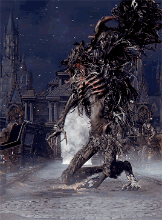

Cleric Beast

Description
The Cleric Beast is a disfigured beast with twisted horns along with a skeletal body.
it is said that clerics pertaining to the Healing Church will eventually succomb to the
beast's scourge and eventually become so.
Tips
- Use a Serrated weapon (Such as the Saw Cleaver, Saw Spear, or Transformed Cane.
- You can use both Oil Urns and Molotov together to cause massive fire damage.
- Take advantage of his stagger windows when hurting his arms
- Aim for his bigger arm, then his head (when possible) for increased damage.